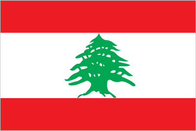
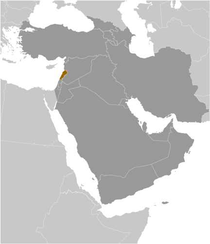
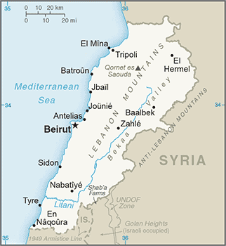

Middle East :: LEBANON
Introduction :: LEBANON
-
Following World War I, France acquired a mandate over the northern portion of the former Ottoman Empire province of Syria. The French demarcated the region of Lebanon in 1920 and granted this area independence in 1943. Since independence the country has been marked by periods of political turmoil interspersed with prosperity built on its position as a regional center for finance and trade. The country's 1975-90 civil war that resulted in an estimated 120,000 fatalities, was followed by years of social and political instability. Sectarianism is a key element of Lebanese political life. Neighboring Syria has historically influenced Lebanon's foreign policy and internal policies, and its military occupied Lebanon from 1976 until 2005. The Lebanon-based Hizballah militia and Israel continued attacks and counterattacks against each other after Syria's withdrawal, and fought a brief war in 2006. Lebanon's borders with Syria and Israel remain unresolved.
Geography :: LEBANON
-
Middle East, bordering the Mediterranean Sea, between Israel and Syria33 50 N, 35 50 EMiddle Easttotal: 10,400 sq kmland: 10,230 sq kmwater: 170 sq kmcountry comparison to the world: 169about one-third the size of Marylandtotal: 484 kmborder countries (2): Israel 81 km, Syria 403 km225 kmterritorial sea: 12 nmMediterranean; mild to cool, wet winters with hot, dry summers; the Lebanon Mountains experience heavy winter snowsnarrow coastal plain; El Beqaa (Bekaa Valley) separates Lebanon and Anti-Lebanon Mountainsmean elevation: 1,250 melevation extremes: lowest point: Mediterranean Sea 0 mhighest point: Qornet es Saouda 3,088 mlimestone, iron ore, salt, water-surplus state in a water-deficit region, arable landagricultural land: 63.3%arable land 11.9%; permanent crops 12.3%; permanent pasture 39.1%forest: 13.4%other: 23.3% (2011 est.)1,040 sq km (2012)the majority of the people live on or near the Mediterranean coast, and of these most live in and around the capital, Beirut; favorable growing conditions in the Bekaa Valley, on the southeastern side of the Lebanon Mountains, have attracted farmers and thus the area exhibits a smaller population densityearthquakes; dust storms, sandstormsdeforestation; soil erosion; desertification; air pollution in Beirut from vehicular traffic and the burning of industrial wastes; pollution of coastal waters from raw sewage and oil spillsparty to: Biodiversity, Climate Change, Climate Change-Kyoto Protocol, Desertification, Hazardous Wastes, Law of the Sea, Ozone Layer Protection, Ship Pollution, Wetlandssigned, but not ratified: Environmental Modification, Marine Life Conservationsmallest country in continental Asia; Nahr el Litani is the only major river in Near East not crossing an international boundary; rugged terrain historically helped isolate, protect, and develop numerous factional groups based on religion, clan, and ethnicity
People and Society :: LEBANON
-
6,229,794 (July 2017 est.)country comparison to the world: 107noun: Lebanese (singular and plural)adjective: LebaneseArab 95%, Armenian 4%, other 1%note: many Christian Lebanese do not identify themselves as Arab but rather as descendants of the ancient Canaanites and prefer to be called PhoeniciansArabic (official), French, English, ArmenianMuslim 54% (27% Sunni, 27% Shia), Christian 40.5% (includes 21% Maronite Catholic, 8% Greek Orthodox, 5% Greek Catholic, 6.5% other Christian), Druze 5.6%, very small numbers of Jews, Baha'is, Buddhists, Hindus, and Mormonsnote: 18 religious sects recognized (2012 est.)0-14 years: 24.09% (male 768,282/female 732,773)15-24 years: 16.42% (male 523,380/female 499,582)25-54 years: 44.79% (male 1,412,114/female 1,378,464)55-64 years: 7.91% (male 232,198/female 260,685)65 years and over: 6.78% (male 183,995/female 238,321) (2017 est.)total dependency ratio: 47.3youth dependency ratio: 35.3elderly dependency ratio: 12potential support ratio: 8.3 (2015 est.)total: 30.5 yearsmale: 29.9 yearsfemale: 31.1 years (2017 est.)country comparison to the world: 115-1.1% (2017 est.)country comparison to the world: 23114.3 births/1,000 population (2017 est.)country comparison to the world: 1355 deaths/1,000 population (2017 est.)country comparison to the world: 193-20.3 migrant(s)/1,000 population (2017 est.)country comparison to the world: 220the majority of the people live on or near the Mediterranean coast, and of these most live in and around the capital, Beirut; favorable growing conditions in the Bekaa Valley, on the southeastern side of the Lebanon Mountains, have attracted farmers and thus the area exhibits a smaller population densityurban population: 88% of total population (2017)rate of urbanization: -0.57% annual rate of change (2015-20 est.)BEIRUT (capital) 2.226 million (2015)at birth: 1.05 male(s)/female0-14 years: 1.05 male(s)/female15-24 years: 1.05 male(s)/female25-54 years: 1.02 male(s)/female55-64 years: 0.88 male(s)/female65 years and over: 0.79 male(s)/femaletotal population: 1 male(s)/female (2016 est.)15 deaths/100,000 live births (2015 est.)country comparison to the world: 137total: 7.4 deaths/1,000 live birthsmale: 7.8 deaths/1,000 live birthsfemale: 7 deaths/1,000 live births (2017 est.)country comparison to the world: 161total population: 77.8 yearsmale: 76.5 yearsfemale: 79.1 years (2017 est.)country comparison to the world: 681.72 children born/woman (2017 est.)country comparison to the world: 16954.5% (2009)6.4% of GDP (2014)country comparison to the world: 952.38 physicians/1,000 population (2014)3.5 beds/1,000 population (2012)improved:urban: 99% of populationrural: 99% of populationtotal: 99% of populationunimproved:urban: 1% of populationrural: 1% of populationtotal: 1% of population (2015 est.)improved:urban: 80.7% of populationrural: 80.7% of populationtotal: 80.7% of populationunimproved:urban: 19.3% of populationrural: 19.3% of populationtotal: 19.3% of population (2015 est.)<.1% (2016 est.)2,200 (2016 est.)country comparison to the world: 117<100 (2016 est.)32% (2016)country comparison to the world: 192.6% of GDP (2013)country comparison to the world: 162definition: age 15 and over can read and writetotal population: 93.9%male: 96%female: 91.8% (2015 est.)total: 11 yearsmale: 12 yearsfemale: 11 years (2014)total: 22.1%male: 22.3%female: 21.6% (2007 est.)country comparison to the world: 71
Government :: LEBANON
-
conventional long form: Lebanese Republicconventional short form: Lebanonlocal long form: Al Jumhuriyah al Lubnaniyahlocal short form: Lubnanformer: Greater Lebanonetymology: derives from the Semitic root "lbn" meaning "white" and refers to snow-capped Mount Lebanonparliamentary republicname: Beirutgeographic coordinates: 33 52 N, 35 30 Etime difference: UTC+2 (7 hours ahead of Washington, DC, during Standard Time)daylight saving time: +1hr, begins last Sunday in March; ends last Sunday in October8 governorates (mohafazat, singular - mohafazah); Aakkar, Baalbek-Hermel, Beqaa (Bekaa), Beyrouth (Beirut), Liban-Nord (North Lebanon), Liban-Sud (South Lebanon), Mont-Liban (Mount Lebanon), Nabatiye22 November 1943 (from League of Nations mandate under French administration)Independence Day, 22 November (1943)history: drafted 15 May 1926, adopted 23 May 1926amendments: proposed by the president of the republic and introduced as a government bill to the Chamber of Deputies or proposed by at least 10 members of the Chamber of Deputies and agreed upon by two-thirds of its members; following government review and approval, the proposal is prepared as a draft amendment and submitted to the Chamber of Deputies for discussion and vote; passage requires at least two-thirds majority vote of a required two-thirds quorum of the chamber membership and promulgation by the president; amended several times, last in 2004 (2016)mixed legal system of civil law based on the French civil code, Ottoman legal tradition, and religious laws covering personal status, marriage, divorce, and other family relations of the Jewish, Islamic, and Christian communitieshas not submitted an ICJ jurisdiction declaration; non-party state to the ICCtcitizenship by birth: nocitizenship by descent only: the father must be a citizen of Lebanondual citizenship recognized: yesresidency requirement for naturalization: unknown21 years of age; compulsory for all males; authorized for women at age 21 with elementary education; excludes military personnelchief of state: President Michel AWN (since 31 October 2016)head of government: Prime Minister (vacant); note - Saad al-HARIRI resigned on 4 November 2017; Deputy Prime Minister Ghassan HASBANI (since 18 December 2016)cabinet: Cabinet chosen by the prime minister in consultation with the president and National Assemblyelections/appointments: president indirectly elected by the National Assembly with two-thirds majority vote in the first round and if needed absolute majority vote in a second round for a 6-year term (eligible for non-consecutive terms); last held on 31 October 2016 (next to be held in 2022); prime minister and deputy prime minister appointed by the president in consultation with the National Assemblyelection results: Michel AWN elected president in second round; National Assembly vote - Michel AWN (FPM) 83; note - in the initial election held on 23 April 2014, no candidate received the required two-thirds vote, and subsequent attempts failed because the Assembly lacked the necessary quorum to hold a vote; the president was finally elected in its 46th attempt on 31 October 2016description: unicameral National Assembly or Majlis al-Nuwab in Arabic or Assemblee Nationale in French (128 seats; members directly elected in multi-seat constituencies by majority vote; members serve 4-year terms); note - seats are apportioned among the Christian and Muslim denominationsnote: Lebanon’s Constitution states the National Assembly cannot conduct regular business until it elects a president when the position is vacantelections: last held on 7 June 2009 (next originally scheduled in 2014, but postponed till 2018)election results: percent of vote by coalition - March 8 Coalition 54.7%, March 14 Coalition 45.3%; seats by coalition - March 14 Coalition 71; March 8 Coalition 57; seats by coalition following 16 July 2012 byelection held to fill one seat - March 14 Coalition 72, March 8 Coalition 56highest court(s): Court of Cassation or Supreme Court (organized into 8 chambers, each with a presiding judge and 2 associate judges); Constitutional Council (consists of 10 members)judge selection and term of office: Court of Cassation judges appointed by Supreme Judicial Council, a 10-member body headed by the chief justice, and includes other judicial officials; judge tenure NA; Constitutional Council members appointed - 5 by the Council of Ministers and 5 by parliament; members serve 5-year termssubordinate courts: Courts of Appeal; Courts of First Instance; specialized tribunals, religious courts; military courtsMarch 14 Coalition: Future Movement Bloc [Sa'ad al-HARIRI]Kata'ib Party [Sami GEMAYEL]Lebanese Forces or LF [Samir JA'JA]Marada Movement [Sulayman FRANJIEH]Social Democrat Hunshaqian Party [Sebouh KELPAKIAN]Hizballah-led bloc (formerly March 8 Coalition):Amal Movement [Nabih BERRI]Ba’th Arab Socialist Party of Lebanon [Fayez SHUKR]Free Patriotic Movement or FPM [Gibran BASSIL]Hizballah [Hassan NASRALLAH]Islamic Actions Front [Sheikh Zuhair al-JU’AYD]Marada Movement [Sulayman FRANJIEH]Syrian Social Nationalist Party [Ali QANSO]Tashnag or Armenian Revolutionary Federation [Hagop PAKRADOUNIAN]Independent: Progressive Socialist Party or PSP [Walid JUNBLATT]Grand Mufti of Lebanon [Sheikh Abdul Latif DERIAN]Maronite Church [Patriarch Moran Mor Bechora Boutros al-RAHI]note: most sects retain militias and a number of Sunni militant groups operate in Palestinian refugee campsABEDA, AFESD, AMF, CAEU, FAO, G-24, G-77, IAEA, IBRD, ICAO, ICC (national committees), ICRM, IDA, IDB, IFAD, IFC, IFRCS, ILO, IMF, IMO, IMSO, Interpol, IOC, IPU, ISO, ITSO, ITU, LAS, MIGA, NAM, OAS (observer), OIC, OIF, OPCW, PCA, UN, UNCTAD, UNESCO, UNHCR, UNIDO, UNRWA, UNWTO, UPU, WCO, WFTU (NGOs), WHO, WIPO, WMO, WTO (observer)chief of mission: Ambassador (vacant); Charge d'Affaries Carla JAZZAR (since 28 January 2016)chancery: 2560 28th Street NW, Washington, DC 20008telephone: [1] (202) 939-6300FAX: [1] (202) 939-6324consulate(s) general: Detroit, New York, Los Angeleschief of mission: Ambassador Elizabeth H. RICHARD (since 17 May 2016)embassy: Awkar, Lebanon (Awkar facing the Municipality)mailing address: P. O. Box 70-840, Antelias, Lebanon; from US: US Embassy Beirut, 6070 Beirut Place, Washington, DC 20521-6070telephone: [961] (4) 542600, 543600FAX: [961] (4) 544136three horizontal bands consisting of red (top), white (middle, double width), and red (bottom) with a green cedar tree centered in the white band; the red bands symbolize blood shed for liberation, the white band denotes peace, the snow of the mountains, and purity; the green cedar tree is the symbol of Lebanon and represents eternity, steadiness, happiness, and prosperitycedar tree; national colors: red, white, greenname: "Kulluna lil-watan" (All Of Us, For Our Country!)lyrics/music: Rachid NAKHLE/Wadih SABRAnote: adopted 1927; chosen following a nationwide competition
Economy :: LEBANON
-
Lebanon has a free-market economy and a strong laissez-faire commercial tradition. The government does not restrict foreign investment; however, the investment climate suffers from red tape, corruption, arbitrary licensing decisions, complex customs procedures, high taxes, tariffs, and fees, archaic legislation, and weak intellectual property rights. The Lebanese economy is service-oriented; main growth sectors include banking and tourism.The 1975-90 civil war seriously damaged Lebanon's economic infrastructure, cut national output by half, and derailed Lebanon's position as a Middle Eastern entrepot and banking hub. Following the civil war, Lebanon rebuilt much of its war-torn physical and financial infrastructure by borrowing heavily, mostly from domestic banks, which saddled the government with a huge debt burden. Pledges of economic and financial reforms made at separate international donor conferences during the 2000s have mostly gone unfulfilled, including those made during the Paris III Donor Conference in 2007, following the July 2006 war.Spillover from the Syrian conflict, including the influx of more than 1.1 million registered Syrian refugees, has increased internal tension and slowed economic growth to the 1-2% range in 2011-16, after four years of averaging 8% growth. Syrian refugees have increased the labor supply, but are blamed for pushing more Lebanese into unemployment. Chronic fiscal deficits have increased Lebanon’s debt-to-GDP ratio, the third highest in the world; most of the debt is held internally by Lebanese banks. Weak economic growth limits tax revenues, while the largest government expenditures remain debt servicing, salaries for government workers, and transfers to the electricity sector. These limitations constrain other government spending, limiting its ability to invest in necessary infrastructure improvements, such as water, electricity, and transportation.$85.11 billion (2016 est.)$83.2 billion (2015 est.)$81.64 billion (2014 est.)note: data are in 2016 dollarscountry comparison to the world: 90$50.46 billion (2016 est.)1% (2016 est.)0.8% (2015 est.)2% (2014 est.)country comparison to the world: 176$19,100 (2016 est.)$19,000 (2015 est.)$18,900 (2014 est.)note: data are in 2016 dollarscountry comparison to the world: 914.7% of GDP (2016 est.)2.5% of GDP (2015 est.)-1.8% of GDP (2014 est.)country comparison to the world: 175household consumption: 85.9%government consumption: 13.2%investment in fixed capital: 20.3%investment in inventories: 0.5%exports of goods and services: 26.5%imports of goods and services: -46.5% (2016 est.)agriculture: 5.7%industry: 21%services: 73.3% (2016 est.)citrus, grapes, tomatoes, apples, vegetables, potatoes, olives, tobacco; sheep, goatsbanking, tourism, food processing, wine, jewelry, cement, textiles, mineral and chemical products, wood and furniture products, oil refining, metal fabricating1.4% (2016 est.)country comparison to the world: 1332.166 millionnote: excludes as many as 1 million foreign workers and refugees (2016 est.)country comparison to the world: 123agriculture: NA%industry: NA%services: NA%NA%28.6% (2004 est.)lowest 10%: NA%highest 10%: NA%revenues: $9.923 billionexpenditures: $14.87 billion (2016 est.)19.1% of GDP (2016 est.)country comparison to the world: 160-9.5% of GDP (2016 est.)country comparison to the world: 196146.6% of GDP (2016 est.)140.4% of GDP (2015 est.)note: data cover central government debt, and exclude debt instruments issued (or owned) by government entities other than the treasury; the data include treasury debt held by foreign entities; the data include debt issued by subnational entities, as well as intra-governmental debt; intra-governmental debt consists of treasury borrowings from surpluses in the social funds, such as for retirement, medical care, and unemploymentcountry comparison to the world: 3calendar year-0.8% (2016 est.)-3.8% (2015 est.)country comparison to the world: 193.5% (31 December 2010)10% (31 December 2009)country comparison to the world: 1028.35% (31 December 2016 est.)7.09% (31 December 2015 est.)country comparison to the world: 101$6.739 billion (31 December 2016 est.)$5.998 billion (31 December 2015 est.)country comparison to the world: 90$54.68 billion (31 December 2016 est.)$52.15 billion (31 December 2015 est.)country comparison to the world: 65$104 billion (31 December 2016 est.)$97.05 billion (31 December 2015 est.)country comparison to the world: 55$11.22 billion (30 December 2014 est.)$10.54 billion (30 December 2013 est.)$10.42 billion (28 December 2012 est.)country comparison to the world: 73$-9.382 billion (2016 est.)$-8.051 billion (2015 est.)country comparison to the world: 183$3.689 billion (2016 est.)$3.551 billion (2015 est.)country comparison to the world: 117jewelry, base metals, chemicals, consumer goods, fruit and vegetables, tobacco, construction minerals, electric power machinery and switchgear, textile fibers, paperSouth Africa 21.1%, Saudi Arabia 9%, UAE 8%, Syria 6.7%, Iraq 5.4% (2016)$17.33 billion (2016 est.)$16.71 billion (2015 est.)country comparison to the world: 78petroleum products, cars, medicinal products, clothing, meat and live animals, consumer goods, paper, textile fabrics, tobacco, electrical machinery and equipment, chemicalsChina 11.2%, Italy 7.5%, US 6.3%, Germany 6.2%, Greece 5.7%, Egypt 4.1% (2016)$54.04 billion (31 December 2016 est.)$48.6 billion (31 December 2015 est.)country comparison to the world: 38$36.6 billion (31 December 2016 est.)$35.11 billion (31 December 2015 est.)country comparison to the world: 74$NA$NALebanese pounds (LBP) per US dollar -1,507.5 (2016 est.)1,507.5 (2015 est.)1,507.5 (2014 est.)1,507.5 (2013 est.)1,507.5 (2012 est.)
Energy :: LEBANON
-
electrification - total population: 100% (2016)17.32 billion kWh (2015 est.)country comparison to the world: 8115.66 billion kWh (2015 est.)country comparison to the world: 770 kWh (2016 est.)country comparison to the world: 158268 million kWh (2015 est.)country comparison to the world: 892.337 million kW (2015 est.)country comparison to the world: 10887.2% of total installed capacity (2015 est.)country comparison to the world: 680% of total installed capacity (2015 est.)country comparison to the world: 12612.2% of total installed capacity (2015 est.)country comparison to the world: 1150.9% of total installed capacity (2015 est.)country comparison to the world: 1410 bbl/day (2016 est.)country comparison to the world: 1580 bbl/day (2014 est.)country comparison to the world: 1510 bbl/day (2014 est.)country comparison to the world: 1480 bbl (1 January 2017 es)country comparison to the world: 1550 bbl/day (2014 est.)country comparison to the world: 162143,000 bbl/day (2015 est.)country comparison to the world: 710 bbl/day (2014 est.)country comparison to the world: 170148,800 bbl/day (2014 est.)country comparison to the world: 460 cu m (2013 est.)country comparison to the world: 157150.1 million cu m (2010 est.)country comparison to the world: 1120 cu m (2013 est.)country comparison to the world: 135150.1 million cu m (2010 est.)country comparison to the world: 750 cu m (1 January 2014 es)country comparison to the world: 15916 million Mt (2013 est.)country comparison to the world: 88
Communications :: LEBANON
-
total subscriptions: 1.068 millionsubscriptions per 100 inhabitants: 17 (July 2016 est.)country comparison to the world: 77total: 4,890,534subscriptions per 100 inhabitants: 78 (July 2016 est.)country comparison to the world: 125general assessment: repair of the telecommunications system, severely damaged during the civil war, now completedomestic: two mobile-cellular networks provide good service; combined fixed-line and mobile-cellular subscribership about 95 per 100 personsinternational: country code - 961; submarine cable links to Cyprus, Egypt, and Syria; satellite earth stations - 2 Intelsat (1 Indian Ocean and 1 Atlantic Ocean); coaxial cable to Syria (2016)7 TV stations, 1 of which is state owned; more than 30 radio stations, 1 of which is state owned; satellite and cable TV services available; transmissions of at least 2 international broadcasters are accessible through partner stations (2007).lbtotal: 4,747,542percent of population: 76.1% (July 2016 est.)country comparison to the world: 76
Transportation :: LEBANON
-
number of registered air carriers: 2inventory of registered aircraft operated by air carriers: 21annual passenger traffic on registered air carriers: 2,583,274annual freight traffic on registered air carriers: 53,902,026 mt-km (2015)OD (2016)8 (2013)country comparison to the world: 161total: 5over 3,047 m: 12,438 to 3,047 m: 21,524 to 2,437 m: 1under 914 m: 1 (2017)total: 3914 to 1,523 m: 2under 914 m: 1 (2013)1 (2013)gas 88 km (2013)total: 401 kmstandard gauge: 319 km 1.435-m gaugenarrow gauge: 82 km 1.050-m gaugenote: rail system is still unusable due to damage sustained from fighting in the 1980s and in 2006 (2017)country comparison to the world: 120total: 6,970 km (includes 170 km of expressways) (2005)country comparison to the world: 146total: 29by type: bulk carrier 4, cargo 7, carrier 17, vehicle carrier 1foreign-owned: 2 (Syria 2)registered in other countries: 34 (Barbados 2, Cambodia 5, Comoros 2, Egypt 1, Georgia 1, Honduras 2, Liberia 1, Malta 6, Moldova 1, Panama 2, Saint Vincent and the Grenadines 2, Sierra Leone 2, Togo 6, unknown 1) (2010)country comparison to the world: 86major seaport(s): Beirut, Tripolicontainer port(s) (TEUs): Beirut (1,034,249)
Military and Security :: LEBANON
-
4.76% of GDP (2015)4.96% of GDP (2014)4.36% of GDP (2013)4.07% of GDP (2012)4.06% of GDP (2011)country comparison to the world: 11Lebanese Armed Forces (LAF): Lebanese Army ((Al Jaysh al Lubnani) includes Lebanese Navy (Al Quwwat al Bahiriyya al Lubnaniya), Lebanese Air Force (Al Quwwat al Jawwiya al Lubnaniya)) (2013)17-30 years of age for voluntary military service; 18-24 years of age for officer candidates; no conscription (2013)
Transnational Issues :: LEBANON
-
lacking a treaty or other documentation describing the boundary, portions of the Lebanon-Syria boundary are unclear with several sections in dispute; since 2000, Lebanon has claimed Shab'a Farms area in the Israeli-occupied Golan Heights; the roughly 2,000-strong UN Interim Force in Lebanon has been in place since 1978refugees (country of origin): 1,001,051 (Syria); 6,454 (Iraq) (2016); 463,664 (Palestinian refugees) (2017)IDPs: 12,000 (2007 Lebanese security forces' destruction of Palestinian refugee camp) (2016)stateless persons: undetermined (2016); note - tens of thousands of persons are stateless in Lebanon, including many Palestinian refugees and their descendants, Syrian Kurds denaturalized in Syria in 1962, children born to Lebanese women married to foreign or stateless men; most babies born to Syrian refugees, and Lebanese children whose births are unregisteredcurrent situation: Lebanon is a source and destination country for women and children subjected to forced labor and sex trafficking and a transit point for Eastern European women and children subjected to sex trafficking in other Middle Eastern countries; women and girls from South and Southeast Asia and an increasing number from East and West Africa are recruited by agencies to work in domestic service but are subject to conditions of forced labor; under Lebanon’s artiste visa program, women from Eastern Europe, North Africa, and the Dominican Republic enter Lebanon to work in the adult entertainment industry but are often forced into the sex trade; Lebanese children are reportedly forced into street begging and commercial sexual exploitation, with small numbers of Lebanese girls sex trafficked in other Arab countries; Syrian refugees are vulnerable to forced labor and prostitutiontier rating: Tier 2 Watch List – Lebanon does not fully comply with the minimum standards for the elimination of trafficking; however, it is making significant efforts to do so; in 2014, Lebanon was granted a waiver from an otherwise required downgrade to Tier 3 because its government has a written plan that, if implemented would constitute making significant efforts to bring itself into compliance with the minimum standards for the elimination of trafficking; law enforcement efforts in 2014 were uneven; the number of convicted traffickers increased, but judges lack of familiarity with anti-trafficking law meant that many offenders were not brought to justice; the government relied heavily on an NGO to identify and provide service to trafficking victims; and its lack of thoroughly implemented victim identification procedures resulted in victims continuing to be arrested, detained, and deported for crimes committed as a direct result of being trafficked (2015)Lebanon is a transit country for hashish, cocaine, heroin, and fenethylene; fenethylene, cannabis, hashish, and some opium are produced in the Bekaa Valley; small amounts of Latin American cocaine and Southwest Asian heroin transit country on way to European markets and for Middle Eastern consumption; money laundering of drug proceeds fuels concern that extremists are benefiting from drug trafficking